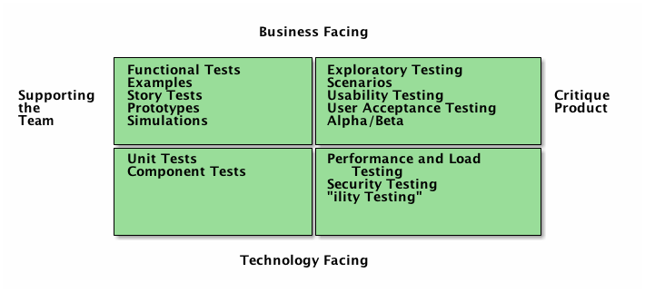

Testing
Table of Contents
1 About This Sprint
In this sprint we momentarily pause the steady onmarch of UML and instead focus on how to test the designed software.
2 User Stories covered in this Sprint
- As a product manager I want to make sure that we are building software of high quality.
- As a product manager I want to make sure that fixed bugs do not re-appear so that I can build the product incrementally.
3 Introduction
This introduction is partially written with the help of my honourable esteemed colleague Dr. Simon Poulding. And when I say “partially” I mean that substantial parts of this introduction consists of texts that he has written and that I have creatively borrowed, brutally slaughtered, and put back into a different order. Not necessarily better, but different.
I guess that all of you have heard of the importance of testing your code by now. The sad story is that many professional software developers have still only heard of the importance but not seen it in practice. In many cases, testing is something you tack on at the end of a project if there is time. Of course, since there never is time left at the end of a project, you ship the code and let the customers discover the faults instead. The situation has gotten better, but it is still not good. That’s why I want to raise the topic already now in the course.
One of the reasons for why testing is considered a time consuming activity is because you are doing manual testing. You have test protocols, you have dedicated testers who follow these protocols and conduct certain actions with the application in a certain order, and document the results. Obviously, we can do better than this. If we are testing the user interface, there are test harnesses for this that simulates button clicks, enters text into text boxes, and compares the end state of the user interface with images of predefined end states, etc (Actually, you might want to study the work of another colleague of mine, Emil Alégroth, on this particular topic).
But even if we decide not to do automated testing of the user interface, we can attach a test harness that pretends to be the user interface.
Figure 1: A Testing Interface sitting next to the User Interface, acting like an alternative user interface.
Digging even further, we can use testing frameworks that intergate with our development environment. JUnit is one example of this when plugged in to Eclipse. You can also run JUnit as a standalone application, which may sometimes have some advantages. It’s nice and all to see the results of testing directly in your IDE, but you will also want to run these tests headlessly on an automated build server.
3.1 Types of Testing
Which tool or method to use depends very much on what the intentions are of your testing. L. Crispin and J. Gregory 1 introduce four quadrants of (agile) testing that describes the types of testing that one may be doing (see Figure 2).

Figure 2: Agile Testing Quadrants (Adapted from Crispin & Gregory 2009)
Technology Facing & Supporting the Team (lower left quadrant) This quadrant represents testing defined by the programmers that verifies the functionality of individual units or components in the system in order to ensure the internal code quality. In many agile practices, this type of testing plays a central role through the technique of test-driven development (TDD). In TDD, the developer writes a test for a piece of functionality, and then develops the code to pass that test. More on this later.
Business Facing & Supporting the Team (upper left quadrant) This quadrant considers testing that in contrast to unit/component testing considers functionality at a higher level such that it is meaningful to the customer, and with the purpose of demonstrating that the functional behaviour of the system is consistent with the requirements.
The tests in this quadrant may be derived from the user stories and examples provided by the customer team. Crispin and Gregory avoid the use of “acceptance test” that is often used for these types of tests on the basis that tests in other quadrants may also be used for this purpose. In addition, Crispin and Gregory consider prototypes etc. used as part of the dialogue with the customer to belong to this quadrant – even mock-ups of, for example, a GUI on paper.
Business Facing & Critique Product (upper right quadrant) This quadrant encompasses manual testing that ensures that the system is really what the customer wants rather than simply meeting the team’s understanding of what the customer requires. Crispin and Gregory argue that exploratory testing – unscripted and unconstrained testing guided by strategy and experience – is a core form of testing in this quadrant.
Technology Facing & Critique Product (lower right quadrant) This quadrant considers types of tests related to non-functional aspects of the system such as security, performance, ability to handle load, scalability, reliability, safety, maintainability, interoperability etc.
We are not going to go through all of these types of testing strategies in this course, but it gives you a map to understand how your selected test strategies fit together and what you ought to do to produce a sufficient test strategy for your project.

3.2 Regression Testing
The lower half of Crispin & Gregory’s testing quadrants are particularly interesting because we are able to introduce regression testing. What this means is that we have a large set of test cases that we are able to execute automatically, for example daily or after each commit. The main benefit of this is that it instills confidence in the developers that what they just produced didn’t accidentally break something else.
I once attended a seminar with Prof. Hans van Vliet where he asked us “what do you think takes the most time in software maintenance?”
- Understanding what the problem is
- Understanding where to fix the problem
- Understanding how to fix the problem
- Understanding the cascade effects of fixing the problem.
If you guessed “understanding the cascade effects” you guessed right, but that is slowly changing with the advent of tools for automated testing and development practices such as Test Driven Development (TDD), but also by modern behaviour-driven test frameworks such as Cucumber. The common denominator for these frameworks is that you write your tests early, and in executable format so that you can quickly re-run them. TDD takes it one step further with its very fast red-green-refactor cycle (basically write one line of tests that fails, then write the (small) code to pass, and then shape it up and put it in the right place etc.). Connect this back to Prof. van Vleet’s question: You no longer need to understand the cascade effects because you have tests in place that will start failing.
3.3 Tools for Automated Testing
Which tool to use for your automated testing is of course highly dependent on your choice of development platform, and you also need to work on different levels, as illustrated in Figure 5. In this figure, the left-hand-side is what you would normally encounter during a build cycle, and this is also the parts where you can hope to automate. In fact, the only difference between testing “Inside the IDE” down to “Nightly Builds” is that you will run more test-cases during your nightlies than in the IDE, where you may focus only on the tests that are relevant for what you are doing right now. You will use the same testing tools.
Figure 5: Testing on different Levels
What will differ, however, is the framework within which your tests are running. Obviously, if your tests are run on-the-fly in your IDE, this needs to be supported. Testing as part of the compilation cycle rarely requires much in terms of extra frameworks. For example make, cmake, Ant, and Maven are all capable of running your test suites according to your wishes, on your machine.
… But what if your machine environment is not the environment in which your system is intended to run? Well, then you need to set up a virtual machine (or a collection of machines if your deployment environment is more complex) to run the tests on. VirtualBox together with Vagrant have helped me on more than one occasion with this.
Further down the stack, you want tools that can set up these virtual machines, download your code, build it, and run tests all in one go, e.g. when you do a commit. Jenkins is a popular choice for this, if you have access to your own servers. For open source projects, Travis CI is an ok choice. I think they have some limit to 100 builds or so before you have to start paying, though. Jenkins and Travis work on a slightly different philosophy. In Jenkins you set up the project and the build steps through an admin interface on the Jenkins server. In Travis you create a build script as part of your repository. For raisins, I am partial to the latter, and have recently been exploring Drone.io as a means to set up my own build server that works like Travis with a repository-based build script.
But I digress.
Backing up to the original topic, you will need to find an automated testing tool suitable for your programming language and your development environment. I list some tools below just to get you started.
- Java: JUnit
- Node.js (JavaScript): Mocha or Jasmine
- JavaScript/JQuery (client side): QUnit
- C++, See e.g. the article Exploring the C++ Unit Testing Framework Jungle for a good discussion of some test frameworks, and what you should require from them
- Emacs Lisp: ERT
- Or you can go to Wikipedia and see even more choices
4 TODO Learning Material
4.1 Book Chapters
- C. Larman, Applying UML and Patterns, 3rd Edition, Chapters:
- Test-Driven Development and Refactoring
4.2 Further Reading
- The Cycles of TDD, by R.C. Martin
- Microsoft Gets TDD Completely Wrong, by James Shore (Note: This article is not Microsoft bashing™ – they are only one among many to get it wrong)
- Guidelines for Unit Tests, by Michael Feathers
- Exploring the C++ Unit Testing Framework Jungle, by Noel Llopis
5 Experiential Learning
5.1 Sprint Test Plan
Go through the user stories for this sprint and make sure you have a clear understanding of how to solve each of them.
Revisit and update your risks and contingencies section.
Add and/or revise the following items to your glossary:
- Unit Testing
- Exploratory Testing
- Automated Testing
- Regression Testing
- Test Driven Development (TDD)
- Automated Test Frameworks
- Continuous Integration
Make sure you understand what each item is, the notation for them, and how to use them either in isolation or together with the other concepts.
5.2 Assignment: Create Test Suite
Create a regression test suite. You will continue to use and extend this test suite later in the course. At this stage, you are focussing on adding test cases for your API endpoints. Use the system events from your System Sequence Diagrams as API endpoints, and express the tests in your chosen test framework.
Tasks:
- List all the system events from all the system sequence diagrams.
- For each system event, identify preconditions (e.g. if the system event depends on that another event is triggered first).
- For each system event, identify what inputs are allowed.
- For each system event, identify what outputs are expected.
- For each system event, Write one or several test in your test framework that tests for the allowed inputs and the expected outputs.
Commit and push this document to your project repository.
Conditions of Satisfaction:
When marking this part of the assignment we are looking for the following:
- size of assignment: Are there test cases for all system events from all the system sequence diagrams?
- For each test case: Does it test normal input as well as explore boundary values?
- For each test case: Does the test case evaluate a meaningful behaviour?
5.3 Update Course Backlog
How do can you come to an understanding of what the system needs to to as a response to a system event? What will change in the system, and how? Are there meaningful tests you can do for your UML documentation? How would you automate this?
Are there any other questions that you want answered? Add them, along with a brief strategy for how to find an answer.
6 Sprint Acceptance Tests
You are done with this sprint when:
- You bave created an automated test suite for your API endpoints
- You have committed/pushed this suite to your project repository
You may also have
- Updated your Sprint Test Plan
- Updated your Course Backlog
- Set up a continuous integration solution to run your tests on commit
Footnotes:
Lisa Crispin, Janet Gregory, “Agile Testing – A Practical Guide for Testers and Agile Teams”, Pearson Education, 2009.